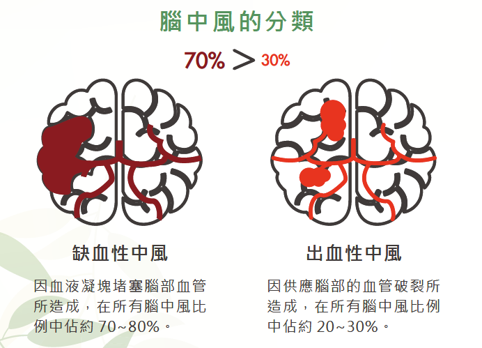
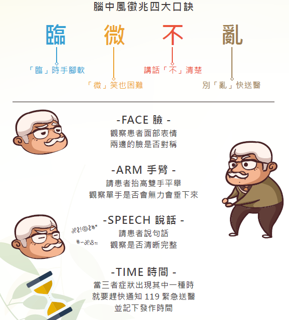
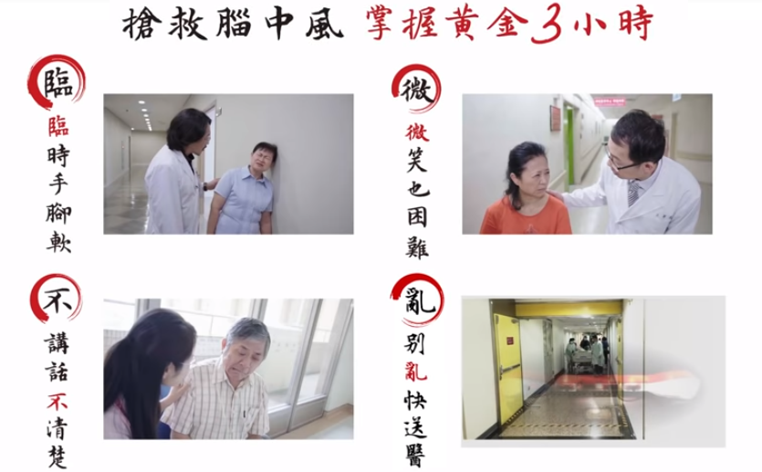
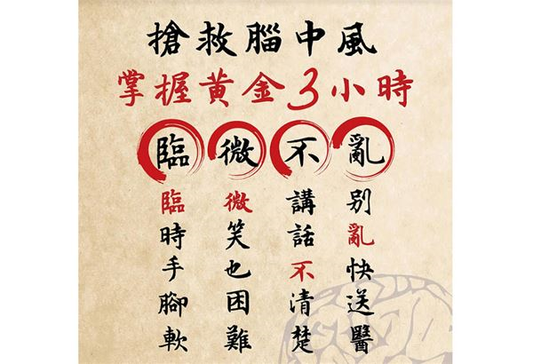
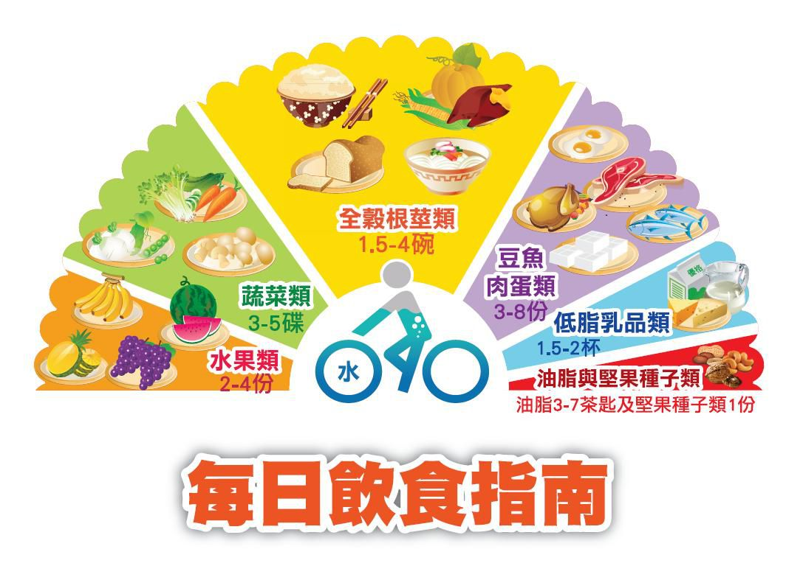
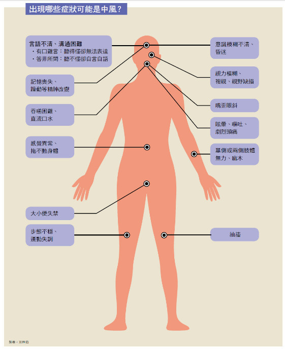
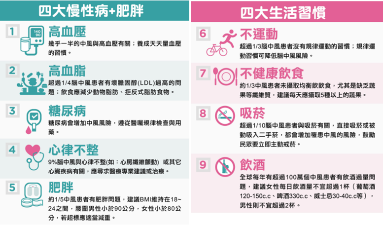
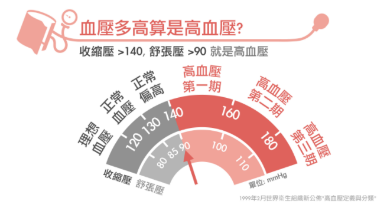

台灣腦中風現況，是國人造成殘障失能的第一位，近十年來一直是十大死因的第2~4 位，腦中風其中70%-80% 為腦血管阻塞。
腦中風主要是因為腦血流受阻，導致無法供應腦部氧氣需求，而發生腦功能障礙。中風可以致命，是2017 年衛福部十大死因統計第四名。但中風的可怕在於會造成個人、家庭及社會的負擔，因為中風的失能，每10 個有2 個會癱瘓臥病在床，10 個有5 個需要家屬協助照顧，10個有7 個無法再從事原有的工作。

把握黃金時間三步驟
認識急性中風症狀，搶救中風分秒必爭

逾9成腦中風患者，錯失黃金3小時治療
根據統計，台灣每17分鐘就有1人發生腦中風，每44分鐘有1名患者死亡，十分驚人！
腦中風主因為腦部血流受阻，造成神經性缺損或腦部缺氧、缺血，引發暫時性或永久性腦功能異常。
一旦民眾發生缺血性腦中風，每晚1分鐘送醫就加速腦部老化3.1周，若晚1小時送醫大腦則老化3.6歲；若是無法及時送醫治療，恐加深失能及死亡風險。統計發現，逾9成患者錯失黃金3小時治療時間，事實上，每早15分鐘治療，即可增加4%康復機率。

✦ 預防中風的發生
多多認識中風症狀，一旦發生請即時就醫，相信可以遠離腦中風的威脅。
1. 長期並按時服用抗血栓藥、控制血壓、血糖、血脂肪濃度藥物，作息正常、避免熬夜或過勞自我的生活習慣調整、控制情緒保持每天愉快的心情作息正常，避免熬夜或過勞。
2. 可記錄平日血壓、血糖值與不適症狀，同時記錄用藥狀況：
3. 健康均衡飲食
4. 維持適當的體重
5. 規律運動
6. 飲酒要節制，鼓勵戒菸

什麼是出血性腦中風？
腦中風是一種由於大腦局部的血流障礙，因而產生局部的功能喪失。中風可分為缺血性腦中風和出血性腦中風。出血性中風又稱為腦出血，主要是由於腦血管破裂，產生血塊壓迫腦細胞及影響供血，出血性腦中風雖然在腦中風中佔較少比例，但死亡率卻明顯較高。

依據衛生福利部105年國人十大死因統計顯示，腦血管疾病為國人10大死因的第4位，共奪走11,846條寶貴的性命，平均每44分鐘就有1人死於腦中風，統計結果顯示腦中風好發於60歲以上之民眾，且男性多於女性。
台北醫學大學邱弘毅教授表示，台灣中風登錄資料庫顯示，初發中風病人在中風一個月後的失能比例是61.2%、三個月是55.58%、半年是51.72%。

高血壓是中風的主因，但許多人不知道自己血壓有多高。
英國威爾斯健康與社會照護研究所朱力安哈特醫師，是研究高血壓的專家，他指出，如果將所有的中風暫時視為同一類，高血壓無疑是導致中風最主要的因素，「也是最容易控制的方法。」
大部分的中風是可以藉由健康的飲食與生活型態、治療積極控制三高來預防的，請把握以下原則，就能降低罹患中風之風險：
一、掌握三高關鍵控制數字：
二、選擇健康飲食
三、養成規律運動
四、維持健康體重
五、拒絕菸酒危害
六、定期健康檢查
腦中風不是老年人的專利，近年來受到飲食高油、高熱量、重口味，以及壓力、熬夜、抽菸、飲酒等不健康生活習慣的影響，越來越多青壯年族群罹患代謝症候群，暴露在腦中風的風險中。專家認為要遠離腦中風，除了建立良好生活形態，吃對食物更有事半功倍之效。
1.黑木耳
2.黑豆
3.燕麥片
4.深海魚
5.橄欖油
6.番茄
7.高維生素C蔬果
8.低脂鮮奶
9.芝麻
10.洋蔥
11.地瓜葉
12.香蕉